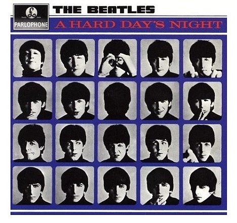

A HARD DAY´S NIGHT

Lanzado el 10 de julio de 1964, el tercer álbum de TheBeatles en menos de dieciocho meses se programó para coincidir con la apertura cinematográfica de su primera película.De las 13 pistas del álbum, siete fueron presentadas en la banda sonora de la película.
Desde el lanzamiento de "With The Beatles", el noviembre anterior, su éxito en el Reino Unido comenzó a extenderse por todo el mundo.
El álbum alcanzó el número 1 en las listas británicas hacia finales de julio y ocupó el primer lugar durante 21 de las 38 semanas que pasó en el Top Twenty.
A continuacion se precentan los 13 temas del album: